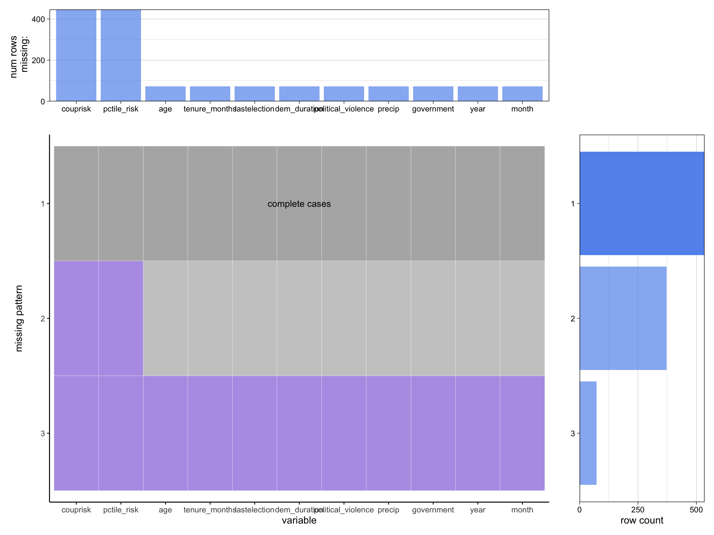

The CDP data is collected by the Cline Center for Advanced Social Research at the University of Illinois Urbana-Champaign. It was a collaborative work by Buddy Peyton, Joseph Bajjalieh, Dan Shalmon, Michael Martin, Jonathan Bonaguro, and Scott Althaus.
The data is stored in a CSV file. In its latest version, the dataset identifies 981 coup events from 1945 to 2022. For each coup instance, the country and the date it took place, the outcome (whether it is realized, unrealized, or a thwarted conspiracy), the type of its initiator (e.g. military, rebels) as well as the fate the deposed leader (e.g. jailed, fled) are recorded. In total, there are 22 attributes.
On average, it is updated every 6 months, starting from November 16th, 2022 to February 23rd, 2023.
2.1.2 The REIGN Data
The REIGN data is collected by Curtis Bell, Clayton Besaw, and Matthew Frank and stored in a CSV file. The dataset is concerning the political leadership, regime attributes, and electoral results for every country dating back to January 1950. In total, the dataset includes 137,219 observations by January 2021 with 41 descriptive features. The features can be generally classified into 3 groups - political leader characteristics, elections and leader change, and government characteristics. Some noticeable continuous variables are:
age: the national leader’s age
tenure_months: the number of months a national leader has been in power during their current tenure
lastelection: an inverted decay function that measures the time since the last election for the leadership position of the country
dem_duration: the logged number of months a country has had a democratic government
political_violence: the relative level (Z-score) of political violence experienced within the borders of a country for that year
precip: the Standardized Precipitation Index (SPI) for each country month
couprisk: an estimated probability of the risk of a military coup attempt taking place in that month
pctile_risk: the percentile risk for each country’s estimated risk of a military coup attempt that month
The dataset also identifies the regime type for each country at a particular time. On average, the dataset has been updated for 30 times starting from February 7th, 2019 to August 3rd, 2021.
2.1.3 References
You may access more informative data descriptions with codebooks for the CDP and the REIGN (download links provided at the end of both pages) data, and you may import the latest version to the local environment for the CDP and the REIGN data. Note: due to maintenance issues, the REIGN data cannot be downloaded directly from their website but can be obtained through GitHub.
2.1.4 Data Import & Cleaning
We plan to download the data to our local environments and then merge them using SQL functions provided in the sqldf package, on keys country, year, and month. The precise import and cleaning steps are given in later sections.
Because both datasets keep track of events happening in the early last century, it can be expected that they contain many missing values. Also, as we have observed, sometimes country names do not match in both datasets. Therefore, we need to clean the data in the preprocessing procedure.
2.2 Research Plan
We merge the two datasets to provide a more comprehensive picture on the political backgrounds of the coups. Using a left join from the REIGN data to the CDP data, we introduce additional information such as the type of government, coup risk, level of political violence, among many others at the time of the coup. With the merged dataset, we seek to answer the questions posed in the introduction in the following ways:
Data Exploration: We will visualize the distribution of all features using a variety of plots – barplots, scatterplots, Cleveland dot plots – as appropriate to gain an initial understanding to the data we are working with. This will allow us to decide what features to pay special attention to in the following steps.
Clustering: We will apply PCA to the numerical features mentioned above (added from the REIGN) data to perform dimension reduction before drawing the biplot. We will then be able to see clusters of the different types of government at the time of the coups and identify any outliers. Depending on whether the clusters are clear, we will also be able to infer if the type of government is highly correlated with coups happening. On the other hand, the biplot also provides insight into highly correlated and uncorrelated features, if there are any.
Time series analysis: Since the data we have range from 1945 to 2020, it provides a great opportunity for us to conduct time series analysis. We plan to at least group the coups by type of government and by region, respectively, to see if the number of coups changed over the span of 75 years. We will also conduct additional time series analysis for any notable factors that stand out from the previous biplot.
2.3 Missing value analysis
We will mainly focus on the numerical variables as well as government data mentioned in the previous section. As discussed, we will apply merging and cleaning to the data and then extract the subset to see if there are any missing values.
Code
library(dplyr)
Attaching package: 'dplyr'
The following objects are masked from 'package:stats':
filter, lag
The following objects are masked from 'package:base':
intersect, setdiff, setequal, union
── Conflicts ────────────────────────────────────────── tidyverse_conflicts() ──
✖ dplyr::filter() masks stats::filter()
✖ dplyr::lag() masks stats::lag()
ℹ Use the conflicted package (<http://conflicted.r-lib.org/>) to force all conflicts to become errors
library(redav)# Read datasetsmain <-read_csv("/Users/shunji/Downloads/Coup data 2.1.2.csv")
Rows: 981 Columns: 29
── Column specification ────────────────────────────────────────────────────────
Delimiter: ","
chr (3): coup_id, country, event_type
dbl (26): cowcode, year, month, day, unrealized, realized, conspiracy, attem...
ℹ Use `spec()` to retrieve the full column specification for this data.
ℹ Specify the column types or set `show_col_types = FALSE` to quiet this message.
Rows: 138600 Columns: 41
── Column specification ────────────────────────────────────────────────────────
Delimiter: ","
chr (3): country, leader, government
dbl (38): ccode, year, month, elected, age, male, militarycareer, tenure_mon...
ℹ Use `spec()` to retrieve the full column specification for this data.
ℹ Specify the column types or set `show_col_types = FALSE` to quiet this message.
Code
# Correct country name discrepanciesreign <- reign %>%mutate(country =ifelse(country =="USA", "United States", country))reign <- reign %>%mutate(country =ifelse(country =="Cen African Rep", "Central African Republic", country))reign <- reign %>%mutate(country =ifelse(country =="Dominican Rep", "Dominican Republic", country))reign <- reign %>%mutate(country =ifelse(country =="Germany East", "Germany", country))main <- main %>%mutate(country =ifelse(country =="German Democratic Republic", "Germany", country))reign <- reign %>%mutate(country =ifelse(country =="Guinea Bissau", "Guinea-Bissau", country))reign <- reign %>%mutate(country =ifelse(country =="Korea South", "Republic of Korea", country))reign <- reign %>%mutate(country =ifelse(country =="Vietnam", "Republic of Vietnam", country))reign <- reign %>%mutate(country =ifelse(country =="Vietnam South", "Republic of Vietnam", country))main <- main %>%mutate(country =ifelse(country =="Rumania", "Romania", country))reign <- reign %>%mutate(country =ifelse(country =="Suriname", "Surinam", country))main <- main %>%mutate(country =ifelse(country =="USSR", "Russia", country))reign <- reign %>%mutate(country =ifelse(country =="Yemen South", "Yemen PDR", country))main <- main %>%mutate(country =ifelse(country =="Yemen Arab Republic", "Yemen", country))reign <- reign %>%mutate(country =ifelse(country =="Congo-Brz", "Congo", country))reign <- reign %>%mutate(country =ifelse(country =="Congo/Zaire", "Congo", country))main <- main %>%mutate(country =ifelse(country =="Democratic Republic of the Congo", "Congo", country))main <- main %>%mutate(country =ifelse(country =="Cote d'Ivoire", "Ivory Coast", country))# Merge the Coup and REIGN datasets on keys country code,# country name, the year and month when coups took place.joined <-sqldf("select distinct m.*, s.* from main m left join reign s on m.country = s.country and m.year = s.year and m.month = s.month")# Function removing duplicate rows of a coup event.# Duplicates may appear if the leadership changes in the year of the coup.# In that case, only the first observation will be kept.remove_duplicates <-function(data) { coup_id.lst <-vector() row.lst <-c()for(i in1:nrow(data)) { coup_id <- data$coup_id[i]if (!(coup_id %in% coup_id.lst)) { coup_id.lst[i] <- coup_id row.lst[i] <- i } }return(data[row.lst,])}# Remove duplicate coup events.joined <-remove_duplicates(joined)# Remove duplicate features: country, year, month.joined <-subset(joined, select =-c(country, year, month))
Code
joined <- joined %>%filter_all(any_vars(!is.na(.))) %>%select(c("age", "tenure_months", "lastelection","dem_duration", "political_violence","precip", "couprisk", "pctile_risk","government", "year", "month"))colSums(is.na(joined)) %>%sort(decreasing =TRUE)
couprisk pctile_risk age tenure_months
446 446 73 73
lastelection dem_duration political_violence precip
73 73 73 73
government year month
73 73 73
Code
plot_missing(joined, percent =FALSE)

After we merge the two datasets, we delete all rows that have all null values and arrive at our joined dataset with the same number of observations as the original main dataset, previously referred to as the CDP data. Out of all our features, couprisk and pctile_risk both have 446 missing values, and all other features have 73 missing values. From the above graph, we can see that roughly 1/3 of the coup observations do not have information concerning the regime type and other numerical attributes. Given that a lot of coups are from many years ago, it is not shocking that a lot of data is missing.